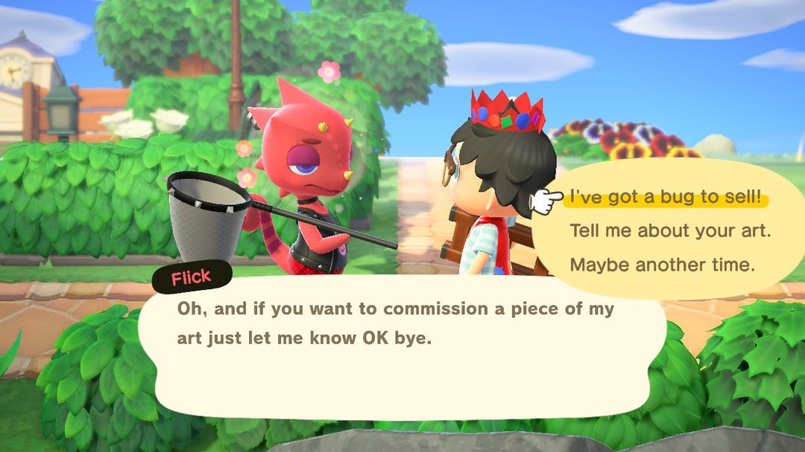
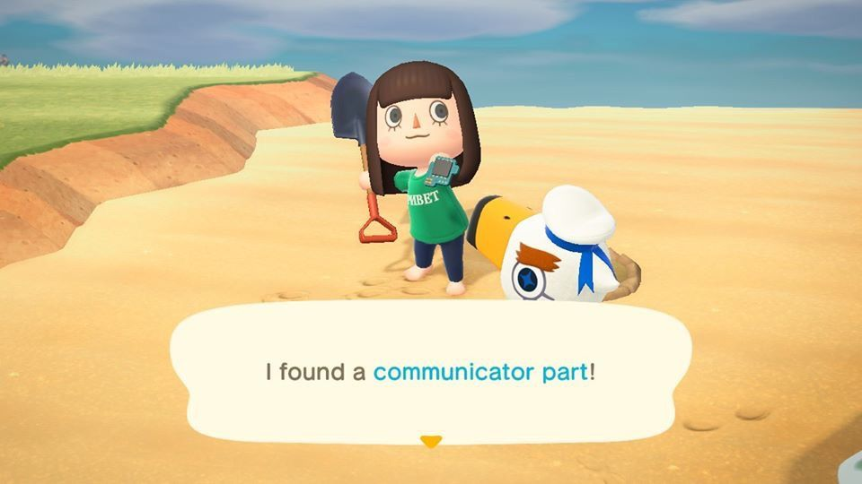
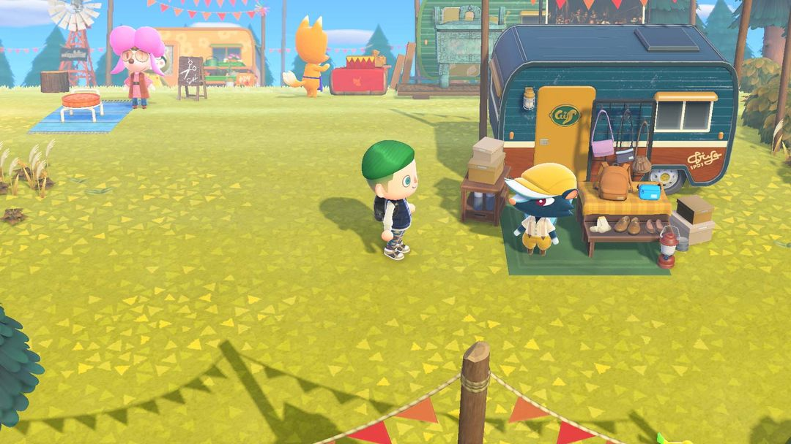
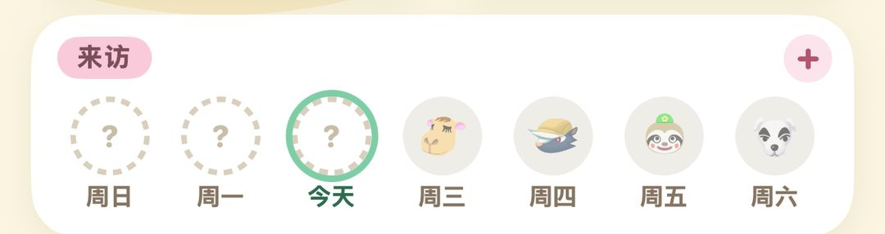

每週會來的 NPC：誰哪天來、來了做什麼
曹賣、K.K.、狐利、駱嵐……一張表看完，順便說清楚巴獵島和航平
島上除了住著的島民，還有一群三不五時上門的訪客：星期日來賣大頭菜的曹賣，星期六晚上在廣場唱歌的 K.K.，還有平日輪流露面的狐利、駱嵐、然然、俞司廷……他們大多只待一天，錯過了就得等下一輪，所以早上上線先弄清楚今天來的是誰，安排起來會順很多。
週末兩位基本上風雨無阻：星期日是曹賣，星期六是 K.K.。星期一到星期五每天最多來一位，來誰是輪流的。傅珂和幽幽只在晚上出現，不佔這個名額，可能和白天的訪客碰在同一天。巴獵島上還有市集，然然、薛革、駱嵐、狐利不來你島上的日子，也能去那裡找他們。
01先弄清楚排班規則
島上每天早上 5 點換日。除了傅珂和幽幽，島上一天最多只來一位特別訪客。這一週誰來、哪天來，在週初就已經排好了；不是每個人每週都輪得到，哪一週沒輪到的，下一週會優先排進來。所以某位訪客好幾天沒露面也不用急，多半下週就會來。
當天來的是誰，早上的廣播會提一下。上線後先聽一下廣播，就知道今天該去哪裡找人。有的訪客在服務處前的廣場擺攤，一眼就能看到；有的會在島上四處閒晃，得自己沿著海灘、河邊去找。
02一週時間表
| 誰 | 哪天、幾點 | 來了做什麼 |
| 曹賣 | 星期日 5:00～12:00 | 賣大頭菜 |
| K.K. | 星期六，18:00～24:00 點歌 | 在廣場唱歌，唱完送唱片 |
| 俞司廷 | 平日，待到隔天 5:00 | 釣魚挑戰；收魚是 Nook商店的 1.5 倍價 |
| 龍克斯 | 平日，待到隔天 5:00 | 收蟲是 1.5 倍價 |
| 狐利 | 平日，待到隔天 5:00 | 在船上賣美術品和家具 |
| 駱嵐 | 平日，在島上走動 | 賣地毯、不可思議壁紙、不可思議地板 |
| 薛革 | 平日，廣場 到 22:00 | 賣鞋子、襪子、包包 |
| 綿兒 | 平日，廣場 | 時尚考驗，獎品是裁縫屋優惠券 |
| 然然 | 平日，廣場 到 22:00 | 賣灌木苗、花、蔬菜苗；雜草用 2 倍價收 |
| 呂遊 | 平日，海灘上 | 幫他找 5 個通訊裝置零件 |
| 海盜 | 平日，海灘上 | 潛水幫他找通訊裝置 |
| 傅珂 | 有流星雨的晚上 | 每天送一份星星或星座的DIY方程式 |
| 幽幽 | 晚上 20:00 到隔天 5:00 | 幫他抓回 5 個靈魂，換一樣東西 |
| 航平 | 每天，碼頭 | 1,000 Nook哩數出海一次 |
表裡的「平日」指星期一到星期五，這幾位在平日輪流來，一天只會遇到其中一位。

龍克斯來了，收蟲比 Nook商店 貴一半（英文版畫面）（圖：Nookipedia）
03每位訪客來了怎麼利用
曹賣、K.K.
曹賣要等 Nook商店 蓋好才會上島，大頭菜也只有星期日上午能跟她買，過了中午 12 點她就走了。想炒大頭菜的話，星期日起床第一件事就是去找她。
K.K. 來島上唱歌，要等島嶼評價到 3 星、開過第一場演唱會以後才算正式開始。每週六晚上 6 點到 12 點能找他點歌，唱完會送你唱片。星期六廣場有釣魚大會、捕蟲大會這類活動時，K.K. 會改到星期日來；星期日也排了活動，就再往後延到星期一。另外，你過生日那天他還會特地來一趟。
俞司廷、龍克斯
這兩位要等服務處蓋成大樓以後才會來。他們收魚、收蟲都是 Nook商店的 1.5 倍價，比平常多賣一半的錢。釣魚大會、捕蟲大會前後存下的魚和蟲，先別急著賣給 Nook商店，留著等他們來再出手。
交給他們 3 條同樣的魚，或是 3 隻同樣的蟲，隔天就會寄來這種魚或蟲的模型，想擺模型的可以趁他們在島上時湊齊交過去。俞司廷那邊要先完成他的釣魚挑戰，才肯收你的魚。
狐利
博物館捐滿 60 件後，狐利才會上門。他第一次來時不在船上，而是在島上走來走去，向你兜售一幅畫，4,980 鈴錢。這一幅一定是真品，買下來捐給傅達，博物館就能擴建美術區。
從第二次起，他的船會停在島北邊的小沙灘，每次擺出 4 幅美術品，每幅 4,980 鈴錢，有真有假。假的買回去，博物館是不收的。
駱嵐
駱嵐不擺攤，在島上四處走，得自己去找。她賣的地毯分小、中、大三種，分別是 1,000、1,500、2,000 鈴錢，買一塊會對應送 1、2、3 張駱嵐兌換券。兌換券存到 5 張，能換一張你還沒有的不可思議壁紙或不可思議地板。不想慢慢存的話，不可思議壁紙、地板也能直接買，3,000 鈴錢一張。
綿兒
綿兒會出一個穿搭主題，你回去換上符合主題的衣服，再來找她。穿對了，她會送一件自家品牌的服裝當獎品，隔天 ABLE SISTERS 也開始賣這個牌子。之後還會寄來 1～2 張裁縫屋優惠券，每張能在店裡換一件 3,000 鈴錢以內的東西。
呂遊、海盜
呂遊會躺在海灘上呼呼大睡，叫醒他以後，他會拜託你找回散落的 5 個通訊裝置零件，零件埋在沙灘裡，挖出來交給他就好。隔天他會寄來一件外國紀念品。幫滿 30 次，寄來的是金色鏟子的DIY方程式。零件要是挖出來沒還給他，隔天會變成生鏽零件。
海盜要等你買過潛水衣以後才會出現。他把通訊裝置掉進了海裡，你得潛下水幫他撈上來，隔天他會寄來海盜系列的家具或衣服。

呂遊的通訊裝置零件埋在海灘上（英文版畫面）（圖：Nookipedia）
傅珂、幽幽
傅珂一週最多來一次，她來的那晚會下流星雨；K.K. 開演唱會的晚上她不會來。找她說話，每人每天能學到一份DIY方程式，星星或星座主題的都學完了，她就改送星星碎片。
幽幽晚上 8 點以後才會出來。走到他面前一搭話，他會被你嚇一跳，把 5 個「幽幽的靈魂」嚇得滿島亂飛。拿捕蟲網把靈魂一個個抓回來交給他，就能在「新東西」和「貴東西」裡挑一樣當謝禮。沒還回去的靈魂，隔天就會消失。
小提示Switch 2 版裡，對著呂遊、海盜、幽幽用大聲公喊一聲，就能直接把人叫醒或嚇散，不用站在旁邊一直按 A。
04巴獵島市集和航平出海
巴獵島市集
島嶼評價到 3 星、K.K. 開過首場演唱會，巴獵島上就會多出一片市集，然然、薛革、駱嵐、狐利都在裡面有攤位。每個攤位要先出資 10 萬鈴錢才會開張，一天只能開一個，想全開得分幾天來。
攤位上的商品每週換一批，想買的東西沒趕上，下週再來看看。他們本人來你島上的那天，巴獵島上對應的攤位是關著的。開了攤位以後，然然、駱嵐、狐利仍然大約兩週來你島上一次，兩邊都能遇到他們。
航平出海
島嶼 3 星、K.K. 開過首場演唱會以後，碼頭上的航平就能載你出海：每天花 1,000 Nook哩數搭一次船，去一座隨機的小島。布置完旅館的第一間 VIP 客房，每天就能多搭一趟，這一趟收 100 旅館券。

巴獵島市集，然然、狐利、薛革都有自己的攤位（圖：Nookipedia）
訪客一多，哪週誰來過、誰還沒來很容易記混。可以用動森圈圈島嶼頁的「來訪」一欄，一週七天一格一格點上，誰來過一目了然。

動森圈圈島嶼頁：星期日到星期六，每天來了誰點一下就記上
05版本變化
巴獵島市集和航平出海是 2.0 加入的；布置好 VIP 客房多搭一趟船，是 3.0 加入的。
動森圈圈 · iOS App 和微信小程式都搜「動森圈圈」